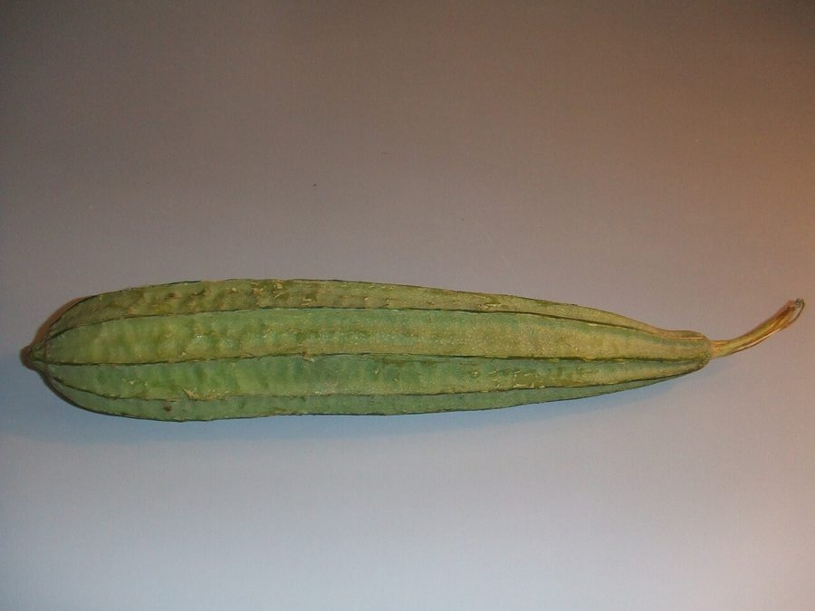

तोरईRidge Gourd
Luffa acutangula · Cucurbitaceae · FLR-0136

- Scientific name
- Luffa acutangula (Roxb.) Ser.
- Family
- Cucurbitaceae
- Hindi
- तोरई
- Local names
- torai, turai, turiya, kali torai, jhinga, ridge gourd
- Status here
- cultivated
- IUCN
- not evaluated
- Review
- audited and independently read
When to look कब देखें
Present all year.
Uses and possibilities उपयोग और संभावनाएँ
“Traditional medicine” means a documented traditional use, not a claim that it works. Nothing on this page is medical advice.
Drawn from the documented uses in the profile below, where each is labelled traditional, current or a research lead. All uses →
तोरई / Ridge Gourd
Luffa acutangula (Roxb.) Ser. — Cucurbitaceae
तोरई — गर्मी की सबसे आम सब्जी, जिसकी लंबी-पतली हरी फलियाँ (लूफ़ा) छत और बाड़ पर चढ़ी बेलों पर हर साल लगती हैं। खीरे की तरह की बेल, दो-ढाई मीटर लंबी, बड़ी पत्तियाँ, पीले फूल, फलियाँ हरी और लंबी होती हैं। पकी हुई फलियों को सुखाकर (loofah स्पंज) नहाने में भी काम लाते हैं। यह सब्जी हल्की, पचने में आसान, और गर्मी में ठंडक देती है।
Quick Identification त्वरित पहचान
| Feature | Description |
|---|---|
| Stem | Coarse, angled, angular ribs, climbing with tendrils, 2–4 m |
| Leaves | Large, 10–20 cm, broadly ovate, palmately lobed, hairy, scabrous |
| Tendrils | Coiled, branched, robust, arising from leaf axils |
| Flowers | Yellow, large, 3–5 cm diameter, funnel-shaped, borne singly or in small clusters |
| Fruits | Elongated, 15–25 cm long, ridged lengthwise (8–10 prominent ribs), pale green maturing to yellow-brown |
| Seeds | Black, flattened, 12–14 mm, numerous per fruit |
Field tip: A vigorous climbing vine with broad, scabrous, palmately lobed leaves. Large yellow flowers appear in summer. The distinctive fruits are long, slender, with prominent lengthwise ridges—like a thin loofah sponge when mature. Harvested young and green for vegetable use.
Morphology आकारिकी
Biometrics (typical measurements for cultivated plants in the Gangetic plain):
| Measurement | Range |
|---|---|
| Vine length | 2–4 m |
| Leaf length | 10–20 cm |
| Leaf width | 8–18 cm |
| Flower diameter | 3–5 cm |
| Fruit length | 15–25 cm |
| Fruit diameter | 2.5–3.5 cm |
Stems: Strongly angled with 7–10 ribs, hairy, rough to touch, not woody but rigid. Tendrils are robust and effectively grip support structures.
Leaves: Broadly ovate, 3–7 lobed, margin toothed, covering scabrous (sandpaper-like) hairs on both surfaces. These rough hairs can irritate sensitive skin.
Flowers: Large, bright yellow, regular, 5-lobed. Numerous stamens are united. Anthers are large and pollen is relatively heavy, requiring insect pollination.
Fruits: The distinctive ridged form with 8–10 prominent raised ribs running lengthwise. The wall is thin and tough. When immature (green, 15–20 cm), it is tender for cooking. Upon maturity, the fruit dries, the rind hardens, and the fibrous vascular bundles (the "sponge") remain intact, surrounded by a network of tough fibers.
Seeds: Black, flattened, winged, with a pale bordered edge. Numerous (100–150 per fruit), held in a large seed cavity.
हिंदी: बड़ी पत्तियाँ, खुरदरी, पीले फूल, लंबी फली लकीरों सहित। पकी फली को सुखाकर नहाने का स्पंज बनता है।
Behaviour & Ecology व्यवहार और पारिस्थितिकी
A vigorous annual or short-lived perennial climber of tropical origin, widely cultivated in the Indian subcontinent for vegetable and fiber use. It is a warm-season crop requiring temperatures above 15°C and performing best in temperatures of 25–35°C. The plant is drought-tolerant once established but performs better with consistent moisture. It is moderately hungry for nutrients, benefiting from well-manured soil but not requiring intensive inputs.
The large yellow flowers are heavily visited by bees (particularly carpenter bees and honey bees) and other pollinators. Fruit set depends on successful pollination. The plant is relatively pest-resistant compared to cucumber and melon but can suffer from powdery mildew in humid conditions.
हिंदी: यह गर्मी की फसल है। तेज़ रोशनी और गर्मी चाहिए। मधुमक्खियाँ खूब आती हैं फूलों पर।
Life Cycle / Phenology जीवन चक्र
| Month / Season | Event |
|---|---|
| April–June | Sowing; germination within 5–7 days in warm soil |
| June–July | Vegetative growth; vines climbing |
| July–August | Flowering begins |
| August–November | Peak fruiting; continuous harvest of immature fruits |
| November onwards | Plant decline as temperatures drop; pods mature and dry |
From sowing to first flower: 35–45 days. From flower to harvestable fruit: 7–10 days. A productive plant yields 15–25 fruits per season in a home garden.
हिंदी: अप्रैल-मई में बीज बोते हैं, जुलाई से तोड़ने लगते हैं, नवंबर तक चलता है।
Associated Species / Interactions संबंधित प्रजातियाँ
- Pollinator dependence: Asian Honey Bee, Carpenter Bee, and bumblebees are essential pollinators.
- Garden companions: Often grown alongside Bottle Gourd, Bitter Gourd, and Ivy Gourd on the same trellis.
- Insect attraction: The large yellow flowers draw a variety of insects; some beneficial (pollinators, predatory wasps), some herbivorous.
Pests and Diseases कीट और रोग
- Shoot borers and fruit flies: Occasionally damage young shoots and ripening fruits.
- Powdery mildew: White fungal coating on leaves in humid conditions; more serious in monsoon.
- Leaf spots and anthracnose: Fungal diseases in wet weather.
- Generally hardy: More resistant to pests than Bottle Gourd or cucumber.
Agricultural / Human Relevance कृषि प्रासंगिकता
Vegetable use. The young tender fruits, harvested when 15–20 cm long and still green, are cooked as a vegetable. They are cut into rounds or lengthwise slices, fried, boiled, or curried. The texture is tender when cooked, with small seeds not objectionable. The vegetable is light, cooling in nature, and recommended for summer consumption in Ayurvedic medicine.
Loofah sponges. Fully mature fruits, left to dry on the vine, develop a tough outer skin that is removed to reveal the fibrous network (the sponge or loofah). These sponges are used for bathing, cleaning dishes, and scrubbing. Some households prepare their own loofah sponges from homegrown plants.
Nutritional and medicinal value. The fruit is low in calories (15–20 per 100 g cooked), rich in dietary fiber, and contains vitamins A, C, and B vitamins. In traditional Ayurvedic medicine, the fruit is considered cooling (shita) and is recommended for conditions of excess pitta (heat).
Cultivation for profit. In some regions, commercial cultivation for both vegetable and loofah sponge production is practiced. The sponges are dried, packaged, and sold in local and national markets.
हिंदी: तोरई गर्मी की सब्जी है। पकी फली सुखाकर नहाने का स्पंज बनता है। गर्मी में शरीर को ठंडक देती है।
Expected Locally स्थानीय रूप से अपेक्षित
Not a field record. Written from published accounts for eastern Uttar Pradesh. No confirmed local sighting yet — if you have seen it, that is what the atlas needs.
अभी तक स्थानीय पुष्टि नहीं। यह विवरण प्रकाशित स्रोतों से है, किसी अवलोकन से नहीं।
Expected as a cultivated plant in home gardens and market gardens throughout Basti district during the warm season (April to November). The vegetable is sold in local vegetable markets. Some households make their own loofah sponges from dried mature fruits.
Distribution वितरण
Global range: Native to Asia; now cultivated throughout the tropics and subtropics globally.
In India: Cultivated throughout the country, particularly in the plains and lower hills up to 1500 m. More common in eastern and northern India.
In Uttar Pradesh: Cultivated in home gardens and market gardens throughout the state, especially in eastern districts.
In Basti district / eastern UP: Common as a cultivated plant in vegetable gardens and commercial fields during the warm season.
Research Questions शोध प्रश्न
Anyone can investigate these | कोई भी इन प्रश्नों की जाँच कर सकता है
- How long does it take from flower opening to harvestable fruit? / फूल खिलने से फल तोड़ने तक कितने दिन लगते हैं? — Mark flowers with a ribbon and count days to harvest size.
- Which insects visit the flowers, and at what time of day? — Observe a flowering plant for 30 minutes each hour from 6 AM to 6 PM.
- Does the fruit set if flowers are covered to prevent insect visits? — Cover some flowers with a bag; count fruits set on covered vs. uncovered plants.
- How does the yield differ between plants grown on full sun versus partial shade? — Grow plants in both conditions and compare total harvest weight.
- Can you successfully dry and prepare loofah sponges from homegrown fruits? — Leave mature fruits to dry on the vine, prepare, dry, and test for usefulness. / क्या आप घरेलू तोरई से लूफ़ा स्पंज बना सकते हैं?
Similar Species मिलती-जुलती प्रजातियाँ
| Species | How to tell apart | हिंदी |
|---|---|---|
| Bottle Gourd (Lagenaria siceraria) | Larger fruits (20–30 cm), bottle- or club-shaped, smooth rind; flowers white, open at night | लौकी — गोल या बोतल जैसे, सफेद फूल |
| Ivy Gourd (Coccinia grandis) | Much smaller fruits (2–4 cm), smooth, orange when ripe; thinner, more delicate vine | कुंदरू — छोटे फल, नारंगी |
| Bitter Gourd (Momordica charantia) | Fruits small (8–12 cm), warty, bitter taste; deeply lobed leaves | करेला — छोटी, ऊबड़-खाबड़ फली, कड़वा |
Field rule: A vigorous climbing vine with broad, scabrous, palmately lobed leaves, large yellow flowers, and long (15–25 cm) pale-green fruits with 8–10 prominent lengthwise ridges is ridge gourd.
Taxonomy & Classification वर्गीकरण
Original description. Described by Roxburgh as Luffa acutangula and later confirmed by Seringe. The genus Luffa contains about 8 species, mostly Old World tropics.
Subspecies. Monotypic — no subspecies are currently recognised.
Family and order placement. Cucurbitaceae, order Cucurbitales. The family is globally distributed and economically important for vegetables, spices, and fiber.
Phylogenetic notes. Luffa acutangula is closely related to Luffa cylindrica (smooth loofah). The two species are sometimes confused, but L. acutangula has prominent ridges while L. cylindrica is smooth.
IUCN status rationale. Not evaluated. Widely cultivated with no conservation concerns.
Photo Gallery फोटो गैलरी
Photos needed आवश्यक फोटो
- [ ] Vine with young green fruits
- [ ] Flowers opening in the morning
- [ ] Mature dry fruits showing the fibrous sponge inside
References संदर्भ
- Roxburgh, W. (1832). Flora Indica, vol. 3. Mission Press, Serampore.
- Hooker, J.D. (1875). Flora of British India, vol. 2. L. Reeve & Co., London.
- Kirtikar, K.R. & Basu, B.D. (1935). Indian Medicinal Plants, vol. 2. Lalit Mohan Basu, Allahabad.
- Agarwal, S.B. & Sharma, M.K. (1994). Nutritional Composition of some Important Vegetable Crops. Indian Journal of Horticulture, 51(2): 162–167.
- Srivastava, K.C. (1986). Indian Vegetables: Botanical and Nutritional Aspects. Oxford & IBH Publishing, New Delhi.
- GBIF Occurrence Data — Luffa acutangula, India (2018–2026).
Source file: species/flora/climbers/ridge_gourd.md